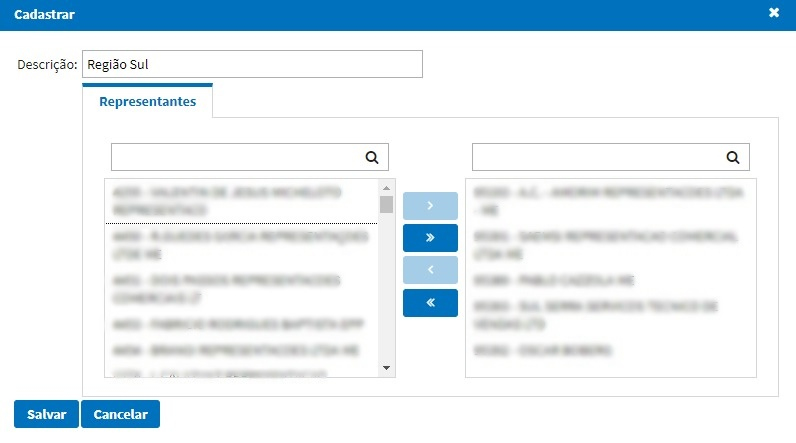

Básico
Usuários
Essa função tem como caracteristica cadastrar, alterar ou inativar usuários.

Principais Campos e Parâmetros:
Nome- Permite inserir o nome do usuário.Sobrenome- Permite inserir o sobrenome do usuário.Login- Permite inserir o login do usuário.Senha- Permite inserir a senha do usuário.E-mail- Permite inserir o e-mail do usuário.Representante- Permite selecionar o representante vinculado ao usuário, para implantação de pedidos;Usuário inativo- Permite inativar o usuário.Aprovador- Permite marcar se o usuário é aprovador de cadastros de novos clientes.Analista de Crédito- Permite marcar se o usuário é analista de crédito para cadastro de novos clientes.Supervisor- Permite marcar se o usuário é um supervisor de vendas. Ao selecionar esta opção será possivel relacionar as regiões que o supervisor poderá consultar informações.Envia E-Mail- Permite marcar se o usuário envia e-mail automáticamente de pedidos de venda para os clientes, ou solicitação de cadastro de usuário.-
Permissões- Permite selecionar as permissões que o usuário possuirá. -
Permissões Cadastros Básico:
- Usuários
- Estabelecimento
- Produtos
- Feriados
- Configuração Sistema
- Representantes
- Regiões
- Slide Show
- Permissões Vendas:
- Cadastro Clietes
- Digitação de Pedidos
- Consulta Pedidos
- Acompanhamento Metas
- Consulta Notas Fiscais
- Integrar Clientes
- Consulta Clientes
- Acompanhamento Vendas
- Pendências Financeiras
- Pendência Aprovação
- Permissões Regiões:
- Na opção Regiões, possibilita o usuário selecionar as regiões que o usuário irá ter permissões.
- Mensagem Reprovação:
- Permite informar uma mensagem padrão para reprovação de clientes para ser enviada ao representante.
Configuração Sistema
Cadastrar Informações da empresa e configuração de envio de e-mail do sistema.
Parâmetros de Conexão
Endereço do Servidor- IP do servidor de envio de e-mail.Porta de Conexão- Porta do servidor de envio de e-mail.E-mail da Empresa- E-mail que será feito o envio.Senha- Senha do e-mail parametrizado.Servidor requer autenticação?- Marcar o flag caso o servidor de e-mail for obrigatório autenticação.Servidor requer TLS?- Marcar o flag caso o servidor de e-mail utilizar TLS.
Estabelecimento
Cadastro de estabelecimentos e parametrizações.
Principais Campos e Parâmetros:
Código- Código do estabelecimento.Nome- Nome do estabelecimento.Dias Min Entrega- Número mínimo de dias para entrega.Dias Max Entrega- Número máximo de dias para entrega.Valor Mínimo Pedido- Valor total mínimo dos pedidos digitados.Valor Mínimo Parcela- Valor mínimo da parcela do pedido.Envia E-mail Cliente- Caso marcado, os clientes do sistema poderão receber e-mails de notificações de pedidos.E-mails Workflow- E-mails da equipe do comercial da empresa, na qual receberão solicitações em sua caixa de e-mails, para liberação de clientes para os representantes no sistema. (Separado por ponto e vírgula, caso tiver mais de um)E-mails Solicitação Cli x Rep- E-mails da equipe do comercial da empresa, na qual receberão solicitações em sua caixa de e-mails sobre solicitações de novos clientes para os representantes no sistema. (Separado por ponto e vírgula, caso tiver mais de um)Param Integração- Token de acesso para sistema externo.Valida Dt Sinc- Caso marcado, o sistema irá validar a data de sincronização do pedido, não permitindo sincronizar pedidos com datas anteriores a atual.Valida Fluxo Aprovações- Caso marcado, o sistema irá validar se o fluxo de aprovações está configurado para o estabelecimento.Não Entrega- Ao marcar o flag será restringido o dia da semana marcado para que o representante não consiga sincronizar o pedido em tal data de entrega no portal.
Representantes
Cadastro de representantes e parametrizações.
Principais Campos e Parâmetros:
Edita Preço Unitário- Ao marcar o representante irá conseguir alterar o preço do item no momento da digitação do pedido.Edita Tabela Preço- Ao marcar o representante irá conseguir alterar qual tabela de preço ele quer usar para o pedido digitado.Edita Cond. Pagto- Ao marcar o representante irá conseguir alterar qual condição de pagamento ele quer usar para o pedido digitado.Edita Forma Pagto- Ao marcar o representante irá conseguir alterar qual forma de pagamento ele quer usar para o pedido digitado.Edita Tipo Frete- Ao marcar o representante irá conseguir alterar o tipo de frete do pedido digitado se será CIF ou FOB.
Obs: Caso desmarcado essas opções o pedido buscará as informações de acordo com o cliente selecionado na digitação do pedido.
* Edita Possui Bonificação - Ao marcar o representante irá conseguir alterar o campo Possui Bonificação no pedido de venda.
* Avalia Crédito - Ao marcar todos os pedidos que o representante digitar, o sistema irá validar se o cliente tem limite de crédito para o total do pedido digitado.
* Lista Todos Clientes - Ao marcar, na tela de digitação de pedidos irá listar todos os clientes na seleção de cliente, caso desmarcado o mesmo será limitado a visualização em 100 clientes. Porém, não impede do representante utilizar o autocomplete.
* Visualiza Previsão - Ao marcar, permite visualizar a data de previsão do faturamento do pedido.
* Dias Min Entrega - Nesta opção o usário poderá parametrizar os dias minímo de entrega por representate e estabelecer um horario limite. Caso o pedido seja implantado após o horário limite, será incrementado mais um dia na data de entrega.
* Horário Limite - Horario limite para implantação de pedido.
* Válida Mínimo Pedido - Ao marcar o sistema irá validar o valor total do pedido mínimo parametrizado por estabelecimento, se caso tiver abaixo o sistema não permitirá sincronizar o pedido.
Na aba Tipo Operações abaixo, o usuário conseguirá selecionar as operações permitidas para o representante digitar o pedido.

Produtos
Cadastro de produtos, é permitido anexar imagem do produto para o representante visualizar no momento da digitação.

Na a direita das informações do produto é permitido anexar uma imagem ao cadastro para facilitar a visualização no momento da digitação do pedido.
Regiões
Cadastro de regiões e relacionar representantes.

Informar uma descrição e relacionar a direita os representantes dessa região. Dessa forma o supervisor que terá permissão a essa região, irá conseguir visualizar as informações apenas desses representantes relacionados.
Feriados
Cadastro de feriados por estabelecimento.

O botão Gerar irá cadastrar automaticamente todos os principais feriados do ano. Já os feriados municipais\estaduais devem ser cadastrados manualmente. Esse cadastro será necessário para não interferir nas metas mensais dos representantes.
Slide Show
Cadastro de banners para visualização na tela inicial - Dashboard.

Obs: Recomendado utilizar imagens de 900 x 400 pixels.
Grupo Aprovação
Cadastro de grupos de aprovação por estabelecimento.
Principais Campos e Parâmetros:
Nome- Nome do grupo de aprovação.Estabelecimento- Estabelecimento do grupo de aprovação.Tipo Aprovação- Tipos de aprovação que o grupo irá realizar, sendo eles:- Pedido - Relacionado a grupos de aprovações comerciais de pedidos de venda.
- Cliente - Relacionado a grupos de aprovações de pré clientes.
- Crédito - Relacionado a grupos de aprovações de pré clientes.
Na aba Usuários é possível relacionar os usuários que irão fazer parte desse grupo de aprovação.